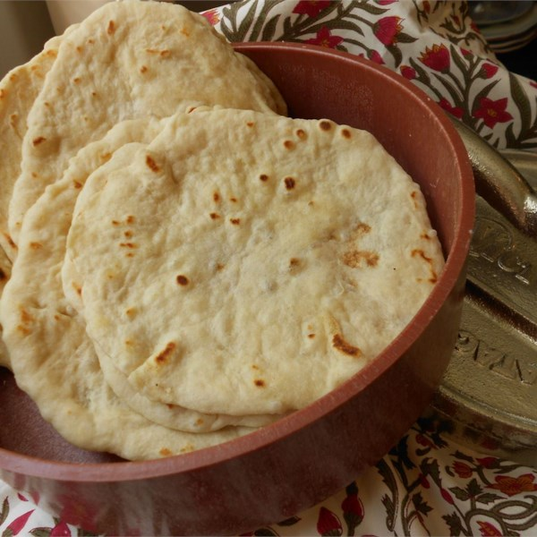

Homemade Flour Tortillas
Ingredients
- 4 cups all-purpose flour
- 1 teaspoon salt
- 2 teaspoons baking powder
- 2 tablespoons lard
- 1 1/2 cups water
Directions
- Whisk the flour, salt, and baking powder together in a mixing bowl.
Mix in the lard with your fingers until the flour resembles cornmeal.
Add the water and mix until the dough comes together;
place on a lightly floured surface and kneed a few minutes until smooth and elastic.
Divide the dough into 24 equal pieces and roll each piece into a ball.
- Preheat a large skillet over medium-high heat.
Use a well-floured rolling pin to roll a dough ball into a thin, round tortilla.
Place into the hot skillet, and cook until bubbly and golden;
flip and continue cooking until golden on the other side.
Place the cooked tortilla in a tortilla warmer;
continue rolling and cooking the remaining dough.
LaDonna's Homemade Flour Tortilla Recipe
Contact Me
Salisha Old Bull's Email
The University of Montana
32 Campus Drive
Missoula, MT 59812
